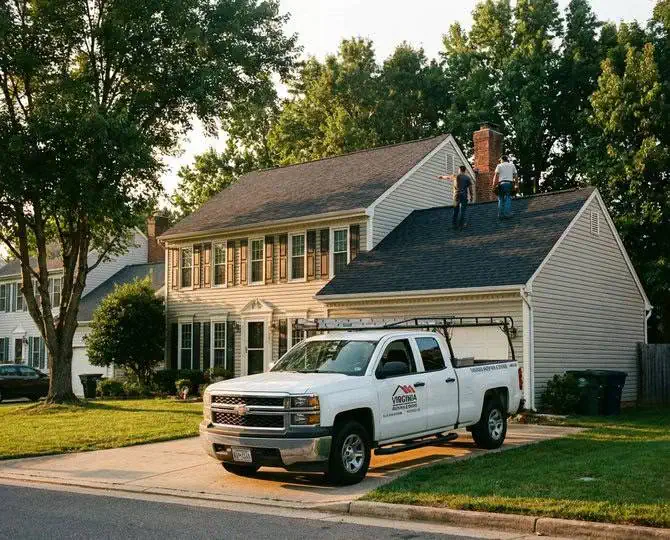
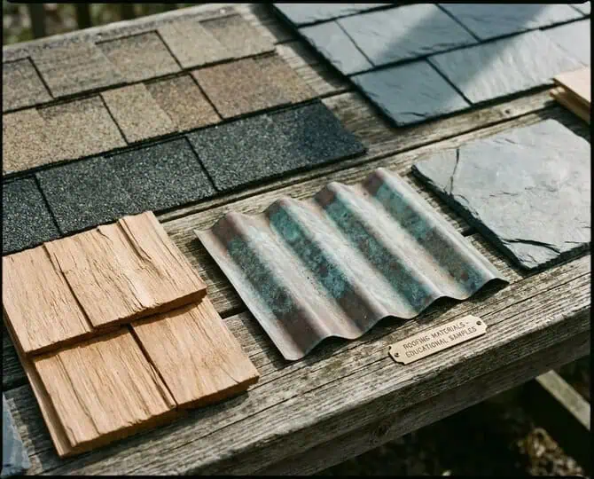
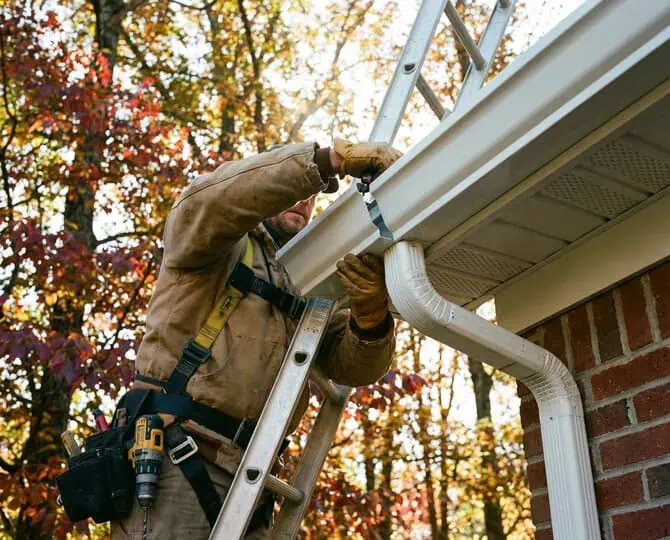
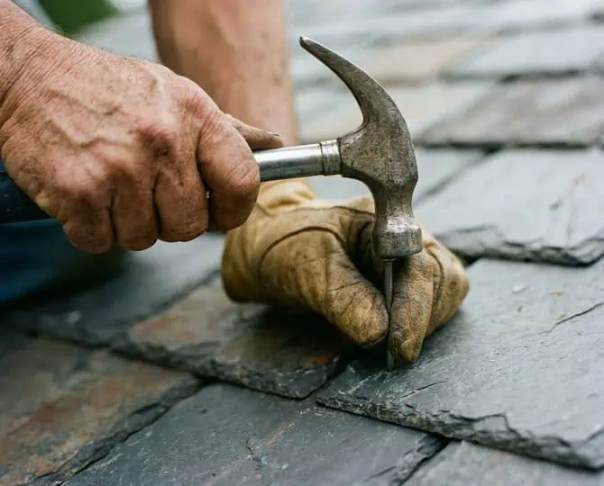
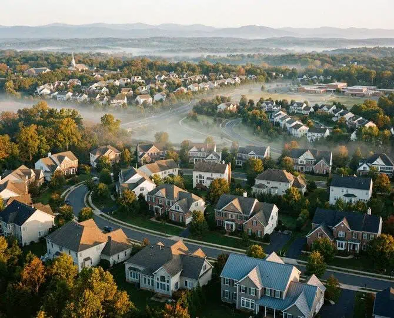

Northern Virginia • NoVA
Need Residential Roofing Repairs or Installation? Call Supreme Contracting!
It's not too difficult to find exterior remodeling services in Northern Virginia - after all, this is a large area with a huge population and there are plenty of companies out there offering roof leak repair and roof replacement.
But there's a difference when you work with Supreme Contracting as your professional roofer. Actually, there are plenty of differences.
Supreme Contracting was founded in 2019 by Tony Gonzalez, who comes from an experienced family of roofers. Supreme offers customers a level of care, honesty, and quality craftsmanship that truly sets our company above and beyond competing roofing contractors. We don't employ high-pressure sales tactics to get you to purchase a big, expensive, new roof installation when a few basic repairs will do.
And we always perform roofing work at the highest quality, with an eye toward long-term functionality and curb appeal, always at a fair price.
As five-star roofing contractors in Northern Virginia, Supreme Contracting guarantees total customer satisfaction on every exterior remodeling home improvement project we undertake. With decades of experience under our tool belt, we'll get the job done right . . . and make sure your house is protected for life.

Everything has a lifespan and nothing lasts forever. That inescapable fact of life holds true for roofs, too. Sometimes it's not worth the expense of patching and repairing your roof; sometimes it's time to put on another one.
If your current roof has reached the end of its useful life, the Supreme team has the answer: A totally new roof made of your preferred materials and designed to the exact specifications of your Northern Virginia home.
Whatever type of roof you prefer, Supreme Contracting can bring it to life. To list some of the more popular roofing materials we typically work with:
asphalt shingles
HandSplit, Resawn, and Tapersawn cedar shake shingles
natural and synthetic slate (recycled rubber) roofs
metal roofs
flat-roof membranes (e.g., torch-down (modified bitumen), self-adhered, ethylene propylene diene monomer (EPDM), and thermoplastic polyolefin (TPO))
All of the above roof materials come with their own expected lifespans and warranties. Since Supreme Contracting is certified as a CertainTeed Shingle Master roofing company and is an authorized installer of GAF roofing products, we're perfectly positioned to provide you with the right roofing option that'll protect and accentuate your home for many years to come.
The style and color of your new roof is entirely up to you. The experts at Supreme Contracting will work with you to parse through the myriad of choices and help you arrive at the roof you'll be happy living under. Whether that's cedar shake, slate, metal, asphalt, or a highly durable flat-roof system such as EPDM or TPO, we'll make sure you derive maximum protection and enjoyment from your newly installed roof.
It's easy to see why so many customers throughout the Northern Virginia region choose Supreme Contracting as their go-to professional roofers: We do it all when it comes to roofing - and we do it with integrity, honesty, and a sense of community with and responsibility toward our NoVA neighbors.

Beware the elements of weather, especially here in NoVA where spring showers, summer storms, autumn leaves, and winter blizzards are par for the course.
Your house needs good gutters to handle those elements.
As it turns out, gutters (as well as gutter guards and downspouts) are a big part of Supreme Contracting's lineup of exterior remodeling services. We design and install gutter systems to protect residential properties, removing large amounts of water - and the potential damage such large amounts of water can cause.
Among the gutter materials Supreme Contracting works with:
Half-round gutters
K-style gutters
Having quality gutters in good repair is an absolute must for your Northern Virginia home. Rely on the exterior remodeling experts at Supreme Contracting to take care of your gutter systems. Your house's foundation will thank you!

When you hire a roofing contractor, you want to make sure they're licensed and insured, that they get consistently good reviews, maybe that they're BBB-accredited, and definitely that they have been there and done that.
That's why Supreme Contracting has so many satisfied customers all around Northern Virginia - because we've been there, done that, and have the experience and knowledge to do an excellent job on your roof.
Our founder and owner, Tony Gonzalez, established Supreme Contracting in 2019. Combined with his father Victor, the family-owned roofing company brings literally decades of experience repairing and installing the full range of roof types, including all types of shingles and gutters.
Led by Tony, Supreme Contracting adopts the philosophy that honesty is the best policy, and that quality service doesn't need to be incredibly expensive. If a roof doesn't require replacement but can be sufficiently repaired using quality materials and good old fashioned roofing techniques, that's exactly what we'll recommend. We're not incentivized to suggest that a customer pay for an entire roof replacement when some smart repair will do the job.
Driven by that sense of integrity, Supreme Contracting provides excellence as Northern Virginia roofing contractors, and our work speaks for itself.
When you need a new flat roof membrane installed, or your gutter guards aren't working like they should, or there's a leak causing water damage to the windows or siding of your house, it's time to bring Supreme Contracting in to protect your property for years to come.

When you work with Supreme Contracting for your roofing and/or gutter needs, you're dealing with a bona fide local family-run small business with an unwavering commitment to providing the highest quality service to our neighbors.
We're NoVA locals to the core. Based in Manassas in the heart of Prince William County, Supreme Contracting offers residential roofing contractors to homeowners in PWC as well as Arlington, Loudoun, Stafford, Fauquier, Clarke, Frederick, Warren, Culpeper, Spotsylvania, and Fairfax counties.
So whether you need shingles replaced on your investment property in Ashburn VA, or storm damage repairs on your house in Great Falls VA, or a new roof on a duplex in Springfield VA . . . Supreme Contracting is the right roofer for the project.
So whether your house is in Berryville, Purcellville, Centreville, Gainesville, Nokesville or Garrisonville . . . Reston, Warrenton, Bealeton, Hamilton, Clifton or Lorton . . . Springfield, Merrifield, Round Hill or Independent Hill . . . we're your residential roofing contractors here in Northern Virginia.
From Front Royal to Falls Church, Tony and the Supreme Contracting team take pride in the work we do for customers across Northern Virginia. Every day we strive to burnish our sterling reputation within the community, and every day we serve our neighbors with the utmost in exterior remodeling excellence.

Call us at 703-434-0697
Message us at SupremeContractingVA.com/contact.html
We'd love to hear from you and learn about your roofing and exterior remodeling needs. But you need to make the first move.
Thankfully, that's easy to do - all you need is to give us a call or snap us a message!
At Supreme Contracting, we don't just specialize in roof repair and replacement of the highest quality. We specialize in delivering complete honesty, friendly service, quality workmanship, and a sense of integrity that can only come from knowing exactly what we're doing.
We're bent on providing the best in customer satisfaction on every roofing job, and we look forward to showing you why homeowners throughout Northern Virginia rave about Supreme Contracting's work on their project.